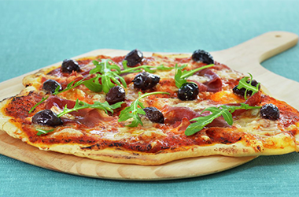

Her finner du gode og enkle måltid du kan ha til middag.
Både kjappe og gode retter for enhver anledning.
Oppskriftene kommer fra kjente og populære kilder
som MENY, matprat og mange fler.
Utvalget som vises er våre favoritter!
UNDER 20 MINUTTER
HELGEKOS
DET SUNNE HJØRNET
PASTASALAT MED KYLLING
ITALIENSK PIZZA MED SPEKESKINKE OG OLIVEN
AVOKADOBURGER
